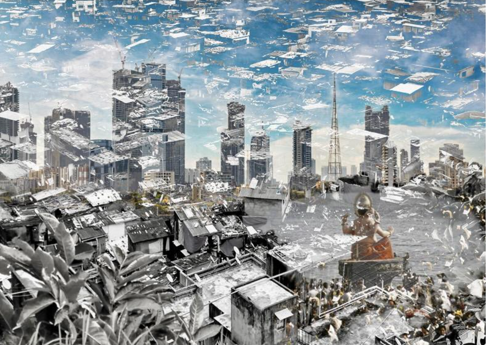

Whose right to the city? This study takes into account theoretical arguments and empirical evidence surrounding this question and reflect on two case studies in order to better understand its significance in urban processes. Two different contexts will be analysed when considering the right to the city: the city of Kampala with refugees' possibility to inhabit it, and the city of Mumbai where "the residents of slums and squatter settlements or of defunct industrial lands in the city center" are the most affected by urban renewal schemes (Weinstein, 2009).

These different practical examples are taken into account, with an aim to frame the right to the city and its role in wider urban development. As Harvey (2003) argued, "The freedom to make and remake ourselves and our cities is, one of the most precious yet most neglected of our human rights". This study attempts to frame the importance of this right in Uganda and India, hoping to act as a starting point for further debate in urban and social practices.
Contact for full text